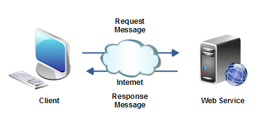

Веб-сервисы
Веб-сервис - это система обмена даннными между программами или ее распределенными компонентами, идентифицируемая уникальным веб-адресом URL (Uniform Resource Locator).
Веб-сервис работает в формате request-response (запрос-ответ), то есть мы отправляем запрос веб-сервису и получаем от него ответ
Место где лежит наш веб-сервис называется сервером, также его называют endpoint (конечная точка, куда идут сообщения от клиента).
Для создания веб-сервисов существует 2 архитектуры SOA и REST
SOA
SOA (Service Oriented Architecture) - архитектура ориентированная на вызов и исполнение удаленных методов. SOA имеющая ряд стандартов и спецификаций, а также протокол передачи данных – SOAP.
SOAP - протокол для обмена данными между веб-сервисами на базе XML. Прежде чем вызвать веб-сервис, нужно этот вызов описать в XML файле формата SOAP, потом это упаковывется у в HTTP пакет и посылается на другой компьютер в сети по TCP/IP.
WSDL – это XML файл описания веб-сервиса.
REST
REST — архитектурный стиль постоения веб сервисах в котором сделан акцент на доступ к ресурсам, а не на исполенение удаленных сервисов как в SOAP сервисах.
Основной концепцией REST является - отсутствие состояния. Согласно REST, сервис не хранит результаты предыдущей операции. То есть работаем по принципу «спросил-ответил-забыл». сервер не должен хранить вообще никакой информации о клиенте – никакой сессии.
С точки зрения пользователя, RESTful сервисы — это ресурсы сети, которыми может быть всё, что можно поименовать и представить. В интеренете все является ресурсами с уникальным индетификатором (URL).
Взаимодействие с ресурсами осуществляется с помощью вызова URL ресурса и стандартных CRUD команд HTTP (GET, POST, PUT и DELETE). Формат данных, передаваемых между клиентом и сервисом указывается с помощью заголовка HTTP — параметр типа содержимого Content-Type. Обычно это JSON или XML, но могут быть разнообразными (например, JPG, PNG — для сервиса обработки графики).
REST vs SOAP
- SOAP – это целое семейство протоколов и стандартов, откуда напрямую вытекает, что это более тяжеловесный и сложный вариант с точки зрения машинной обработки. Поэтому REST работает быстрее.
- SOAP и REST – не конкуренты. SOAP работает с операциями, а REST – с ресурсами.
- REST может быть представлен в различных форматах(XML, JSON), а SOAP привязан к XML.
- SOAP используют HTTP как транспортный протокол, в то время как REST базируется на нем. Это означает, что все существующие наработки на базе протокола HTTP, такие как кеширование на уровне сервера, масштабирование, продолжают так же работать в REST архитектуре, а для SOAP необходимо искать другие средства.
Реализация веб-сервисов в Java: JAVA SERVLETS
Java Servlets – это технология реализующая возможности веб-сервиса, то есть она позволяет принимать, обрабатывать сетевые запросы и отправлять ответы.
Фактически в java это класс, расширяющий клаcс HttpServlet, и помеченный аннотацией @WebServlet, у которого есть два главных метода:
void doGet(HttpServletRequest request, HttpServletResponse response) {}
void doPost(HttpServletRequest request, HttpServletResponse response) {}
По сути сервлет связывает ссылку из адресной стокрои и java-класс, которые выполняет какую то логику и возвращает отвтет в виде HTML, JSP, JSON и др.
Реализация веб-сервиса с помощью Spring Boot
В современной разработке уже никто на прямую не использует HttpServlet, так как Spring Boot предоставляет набор готовых инструментов для реализации сервиса.
Пример, Rest-севриса, который работает с запросами по URL http://localhost:8080/api/v1/customers/
Тестирование сервисов
Postman – мощный набор инструментов для тестирования Rest-сервисов. Он может отправлять запросы на какой нибудь Rest-сервис и получать от него ответы.